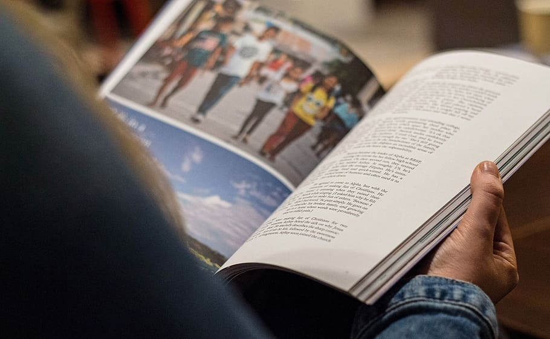

SUBJECT OF STUDY
English - Structural and Functional English (includes Reading, Copy Writing and Spoken English)
Second Language - French (IV & V) Tamil / Hindi
General Science / Environmental Science
Social Science
Mathematics
Drawing / Arts and Craft
Life Skills & Value Education / Scripture
Physical Education
Computer Science (UKG Class to V Class - compulsory)
Third language - Commencing from class V (Tamil / Hindi / Sanskrit)
General Knowledge
Music
Environmental Education
Environmental Education (Class I - V)
One of the other special features of education at the primary level is the environmental education. Here simple but sensitive topics are dealt through Projects, Assignments, Hands on experience, Talks, Group Discussions and various other activities. This enables the children to have special relationships with their environment.
Academics
School Academic Session
The academic session is from JUNE to MAY. The academic year comprises of three terms, each term ending with the Terminal Examination.
FIRST TERM
First week of June to last week of September.
Activities in the First Term :
1.Monthly Tests (Pre-K.G., LKG & UKG)
2.Parents-Staff Contact Sessions
3.Sports Meet
4.Inauguration of Students’ Council / Tiny Tots Club
5.Faculty Training, Orientation programmes
6.Independence Day
7.Teachers' Day Celebration
8.Inter Section Competitions
9.Inter School Cultural Extravaganza
10.First Terminal Examination
SECOND TERM
{First week of October to Third week of December}
2.Activities in the Second Term :
3.Monthly Tests (Pre-KG, LKG & UKG)
4.Faculty Training, Orientation programmes
5.Projects and Exhibitions
6.Children’s Day & Christmas Celebrations, Rangoli - Inter School Cultural Programme
7.Inter Section Competition (Pre-KG, LKG & UKG)
8.Parents - Staff Contact Session
9.Second Terminal Examination (Pre-KG, LKG, UKG & XI
THIRD TERM
1.First week of January to Second week of April
2.Activities in the Third Term
3.Monthly Tests (Pre-KG, LKG & UKG)
4.Parents - Staff Contact Sessions
5.Faculty Training, Orientation programmes
6.Excursions (Pre-KG, LKG, UKG & XI)
7.Republic Day Celebration
8.Annual Day
9.Medical Inspection
10.Third Terminal (Annual) Examination (Pre-KG, LKG, UKG)
11.Class Group Photo Session
The academic session is from JUNE to MAY. The academic year comprises of three terms, each term ending with the Terminal Examination.
FIRST TERM
First week of June to last week of September.
Activities in the First Term :
1.Mid-Term Examination (XI & XII)
2.Inter-House Intramural Games (XI & XII)
3.Inter-House Cultural Competitions (XI & XII)
4.Inter-House Literary Competitions (XI & XII)
5.Club Activities (XI & XII)
6.Parents-Staff Contact Sessions
7.Sports Meet
8.Inauguration of Students’ Council / Tiny Tots Club
9.Faculty Training, Orientation programmes
10.Independence Day
11.Teachers' Day Celebration
12.Educational Tours (XII)
13.Unit Tests (XI & XII)
14.Inter Section Competitions
15.Inter School Cultural Extravaganza
16.First Terminal Examination
SECOND TERM
First week of October to Third week of December
Activities in the Second Term :
1.Mid-Term Examination (XI & XII)
2.Inter-House Cultural Competitions (XI & XII)
3.Inter-House Literary Competitions (XI & XII)
4.Club Activities (XI & XII)
5.Faculty Training, Orientation programmes
6.Projects and Exhibitions
7.Children’s Day & Christmas Celebrations, Rangoli - Inter School Cultural Programme
8.Parents - Staff Contact Session
9.Career Counselling Programme (XI & XII)
10.First Revision (XII)
THIRD TERM
First week of January to Second week of April
Activities in the Third Term
1.Revision / Model Examinations (XII)
2.Mid-Term Examination (XI)
3.Pre - Board Examination (XII)
4.Inter Section Competitions
5.Inter-House Cultural Competitions (XI)
6.Inter-House Literary Competitions (XI)
7.Club Activities (XI)
8.Parents - Staff Contact Sessions
9.Faculty Training, Orientation programmes
10.Republic Day Celebration
11.Annual Day
12.Medical Inspection
13.Class Group Photo Session
Style of education

The school aims at providing modern all round education striving for excellence in every field, be it moral instruction or ethical values, physical education or academic performance with due emphasis on character building. Maximum opportunities will be provided in the campus to encourage initiative, self-reliance and leadership qualities. Special efforts will be made to identify any special ability and talent that the child may have.
Click on the image to view PDF ↓

Medium of Instruction

The medium of instruction is English and English is the first language.
LANGUAGES TAUGHT AT HIGHER LEVEL
(SECOND LANGUAGE)
1.Hindi
2.Tamil
3.Sanskrit (VIII - X)
4.French (VIII - X)
LANGUAGES TAUGHT AT LOWER LEVEL
(THIRD LANGUAGE)
1.Hindi
2.Tamil
School Curriculum
SUBJECT OF STUDY
English Reading & Conversation
English Writing
English Dictation
Number Work
Health Talk
Nature Talk
Story Telling
Recitation
Physical EducatioN
Language-Tamil/Hindi (Language compulsory from U.K.G.)
Computer Science (from U.K.G.)
Drawing
Activity Classes
ACTIVITY CLASSES FOR EFFECTIVE LEARNING
The activities provided in the room are designed, planned and organized in such a way as to give opportunities for the young children to explore and experience the world around them. It concentrates not only on eye hand co-ordination but also on finer muscular development. The room provides an environment that fosters thinking and self confidence. Above all it creates in the young minds a love for learning.
This is the stage when students become versatile and highly exuberant and keeping their high level of motivation, creativity and thirst for action in mind, curriculum is planned to give more scope for activity based learning.
The scheme for classes VI-VIII has been designed on Term Assessment basis with gradual increase in the learning assessment as the students move forward. This would prepare the students to cover the whole syllabus of the academic year and face the challenge of class X Board examination, and would thus, ensure the 'quality of education'.
At this stage, curriculum becomes more concept oriented. In order to concretize the concepts in Science and Mathematics, Practical classes are conducted for Physics, Chemistry, Biology and Mathematics periodically.
Abstract concepts of Science and Mathematics and Grammatical rules of English are made simpler and explained through educational CD’s at the Computer Centre of the school.
Exclusive sessions for softskills like English Communicative skills, General Awareness, Personality Development, Life Skills, Value Enhancement, Health and Hygiene are provided through periodical lectures by eminent personalities and workshops and seminars.
Counselling sessions are organized for students to combat problems related to learning and emotions.
Field Trips, Nature Walk, Visits to places of topical interest as per the text book, are organized periodically.
A variety of activities comprising of Sports and Culturals are organised to tap the talents of students.
Thematic Project Exhibitions on Science, Humanities, Hobbies, Work Experience are conducted through which the students gain not only a deep understanding of their subjects, but also gain experience in team work and organisational skills.
Encouraging participation in co-curricular activities at intra and inter school levels.
SUBJECTS OF STUDY
English Prose (Poetry, Non-Detailed, Composition & Comprehension, Grammar)
Second Language (Sanskrit (VIII)/Tamil/Hindi/French)
Third Language (Tamil / Hindi / Sanskrit)
Science & Technology (Physics, Chemistry, Biology)
Social Science (History and Civics, Geography)
Mathematics
Computer Science
Work Experience
Arts & Craft
Life Skills & Value Education / Scripture
Physical Education
Environmental Education
General Knowledge
P.S.
Subject - Third Language is compulsory from classes V to VIII.
Hindi should be a part of one’s learning subjects either at second language or at third language level from V std to VIII std.
Class IX and X are considered as a single course. Admissions are not entertained in class X as this is a course taken together. At this stage, the Students are in the process of becoming well rounded personalities. Having been exposed to a variety of activities aimed at exploring their academic, cultural and sports potentials, they have entered the secondary level wherein the academics take prime place. This is also a stage when they are exposed to a great amount of learning related stress. A variety of activities are designed and executed to make the transition smooth.
The examination from Academic Year 2017-18 and onwards would be conducted as per the remodeled assessment structure. All students will take up the Board Exam at the Promotion Examination end of the Academic Year.
Practical classes in Science and Mathematics are assessed.
Grades are awarded to Physical Education, Health Education, Environmental Education, Art Education, Life Skills & Value Education / Scripture.
Small time projects are a regular feature of all the subjects.
Internal Assessment on English, Language, Science, Mathematics and Social Science become an integral part of the Class X Board Examination.
Conducting coaching classes after regular class hours to venhance and supplement learning skills.
Career Counselling provided by highly functional and reputed organizations.
Seminars and workshops are organized for enhancing academic proficiency and developing soft skills.
Participation in a variety of Olympiads and Talent Search Examinations conducted by reputed organizations.
Organising high profile and innovative project Exhibitions.
Instilling leadership qualities through assigning roles as ‘volunteers’ to enhance discipline in the campus.
Encouraging participation in Co-Curricular activities at vintra and inter levels.
SUBJECT OF STUDY
English Communications
Second Language - Hindi Course ‘B’ / Tamil / Sanskrit / 2. French
Mathematics with Practicals
Science & Technology
i) Physics Theory & Practicals
ii) Chemistry Theory & Practicals
iii) Biology Theory & Practicals
Social Science
History, Civics, Geography, Economics
& Disaster Management
Work Experience
Computer Science
Physical Education
Health Education
Art Education
Environmental Education
Physical Training
Life Skills & Value Education / Scripture
Taken as a course together, students are not entertained to gain admission in Class XII.
This is the final phase of schooling when students have emerged as young adults capable of taking responsibilities and fulfilling the objectvies that they have undertaken.Education at this stage becomes very focused. Having been exposed to all the aspects of education, having realized their strengths and their potential through myriad activities and competitions, they have arrived at a stage when they can take on the challenges of life.
Great importanance is given to academic excellence.
Guest lectures are provided by eminent professors and vpersonalities on important topics related to the syllabus.
Conducting high profile Project Exhibitions based on vacademic subjects to enhance subject knowledge.
Organising Workshops on soft skills like Personality vDevelopment, English Communications Skills, Facing interview Board, Leadership etc.
Organising Seminars on interesting, innovative, vocational vand current topics.
Instilling leadership and organizational skills through vmembership in the Students’ Council which organizes all the club activities and ensures a disciplined atmosphere in the school.
Encouraging participation in Co-Curricular activities at vintra and inter school levels.
SUBJECT OF STUDY
English Core
Any Five of the following elective subjects.
SCIENCE STREAM
Physics
Chemistry
Mathematics
Biology
Computer Science
Language (Tamil / Hindi / French)
Home Science
Physical Education
COMMERCE STREAM
Business Studies
Accountancy
Economics
Mathematics
Informatics Practices
Language (Tamil / Hindi / French)
Home Science
Physical Education
Language (Tamil / Hindi / French), Home Science and vInformatics Practices, will be sanctioned only if there are a minimum of five applicants.
Six subjects are compulsory for both the streams.